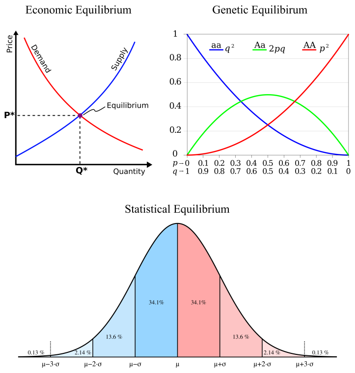

71 Economics
The key question in “History of economics” should be: how was it possible for this field to get it so wrong?
Peters - Cherrier tweet exchange
71.1 Economics is Pseudo-Science
Kyger and Fix
‘Essentialism’, as we see it, is the reification of a theory — a transformation from ‘provisional explanation’ to ‘timeless truth’.
Mainstream economics makes so many false claims that we could write a book debunking them. (Which is why Steve Keen did just that [7].) Although economics presents itself as a hard science, under the hood it is essentialist dogma, held in place by tradition.
Outside economics, the term has an unambiguous meaning: a ‘natural law’ is an empirical regularity with no known exception. The laws of thermodynamics are a prime example. Left alone, objects ‘naturally’ converge to thermodynamic equilibrium. Leave a hot coffee on the table and it will soon cool to room temperature. The outcome is the same today as it was yesterday. It is the same for you as it is for me. It is a ‘natural law’.
By documenting and explaining this empirical regularity, we are following the recipe laid out by Locke, Hume, and Kant. Observe the real world and try to explain consistent patterns. When economists appeal to ‘natural law’, however, they are doing something different. Take the so-called ‘natural’ rate of unemployment. If this rate were like the laws of thermodynamics, unemployment would gravitate towards a single value. Try as you might, it would be impossible to change unemployment from this ‘natural’ rate.
Needless to say, unemployment does not work this way. Instead, it fluctuates greatly, both in the short term, and over the long term. So when economists refer to the ‘natural’ rate of unemployment, they don’t mean an empirical regularity. They mean an essence. As Milton Friedman defined it, the ‘natural’ rate of unemployment is that which is “consistent with equilibrium in the structure of real wages” [9]. So whenever (and wherever) the labor market is in ‘equilibrium’, unemployment is at its ‘natural’ rate.
So how do you tell when the market is in ‘equilibrium’? Good question … nobody knows. That’s because market ‘equilibrium’ is not something economists observe. It is something economists imagine and then project onto the world. It is an essence.
To convince yourself that this true, pick any economics textbook and search for the part where the authors measure market ‘equilibrium’. Find the section where they construct the ‘laws’ of supply and demand from empirical observations. Look for where they measure demand curves, supply curves, marginal utility curves, and marginal cost curves. Seriously, look for these measurements. You will not find them.5
You won’t find them because they are unobservable. These concepts are essences. The equilibrium-seeking free market is an idea that economists project onto the world, and then use to interpret events. Anything that fits the vision is ‘proof’ of the essence. Anything that seems contradictory is dismissed as a ‘distortion’.
And that brings us to economics education. The core content in Econ 101 has changed little over the last half century (if not longer). And that’s not because the ‘knowledge’ is secure. It’s because the content of Econ 101 is a tradition. The point of Econ 101 is to indoctrinate the next generation in the ‘essence’ of economics. This powerful combination of essentialism and traditionalism has made economics a “highly paid pseudoscience”
In his essay ‘The Methodology of Positive Economics’, Friedman argues that you cannot test a theory by comparing its assumptions to reality [13]. Instead, you must judge the assumptions by the predictions they give. If the predictions are sound, says Friedman, so too are the assumptions. (For why this is a bad idea, see George Blackford’s essay ‘On the Pseudo-Scientific Nature of Friedman’s as if Methodology’
Scientists want to know if their hypothesis is ‘correct’. The problem, though, is that making this judgment is inherently subjective. The evidence for (or against) a hypothesis is always contingent and incomplete. And so scientists must make a judgment call.
The purpose of statistics is to put numbers to this judgment call by quantifying uncertainty. It’s a useful exercise, but not one that removes subjectivity.
Unfortunately, in many corners of science, statistical tools have become reified as the thing they were never designed to be: a decision-making algorithm. Scientists apply the tools of (standard) statistics as though they were an essential truth, a ritualistic algorithm for judging a hypothesis.
Fortunately, there is a growing movement to reform hypothesis testing. One option is to pre-register experiments to remove researchers’ ability to game statistics. Another option is to lower the ‘traditional’ level of statistical significance. While we welcome both changes, we note that they do not solve the fundamental problem, which is that judging a hypothesis is always subjective. For that reason, we favor a transition to Bayesian statistics. Bayesian statistics is up front about the subjective element of judging a hypothesis. In fact, when you use the Bayesian method, this subjectivity gets baked into the calculations (in what Bayesian’s call a ‘prior probability’).

Figure: Essentialist totems in economics, biology and statistics. Clockwise from top left: the neoclassical model of the equilibrium-seeking market, the Hardy-Weinberg model of genetic equilibrium, and the normal distribution — the ‘equilibrium’ behavior of infinitely many random samples.
As physicist Sabine Hossenfelder shows in her book Lost in Math, the appeal to aesthetics leads scientists astray more often than it leads them to the truth.
Kyger and Fix (2021) Essentialism and Traditionalism in Academic Research
71.2 The Invisible Hand
“Yes, there was an ‘invisible hand,’” Stephen Cohen and Brad DeLong write in their history of the topic, Concrete Economics. “But the invisible hand was repeatedly lifted at the elbow by the government, and placed in a new position from where it could go on to perform its magic.”
71.3 Economic Goods and Services
Roser
Economic goods are scarce in relation to the demand for them
Uneconomic Breathing!!
An economic good or service is provided by people to each other as a solution to a problem they are faced with and this means that they are considered useful by the person who demands it.
And a last characteristic that is helpful in deciding whether you are looking at an economic product is ‘delegability’. An activity is considered to be production in an economic sense if it can be delegated to someone else. This would include many of the goods and services on that long list we considered earlier, but would exclude your breathing, for example.
Many discussions about economic growth are extraordinarily confused. People often talk past one another. I believe the reason for this is that the discussion of what economic growth is, gets muddled up with how it is measured.
Growth is often measured as an increase in income or inflation-adjusted GDP per capita. But these measures are not the definition of it.
71.4 Economics Discipline
Rodrik on CORE-ECON
A key advantage of the CORE approach is that it tackles issues like inequality and climate change head-on. But the pedagogically more interesting move is that it replaces the standard benchmarks of economics with alternative benchmarks that are more realistic and useful. For example, in contrast to conventional economics, CORE assumes that individuals are pro-social and myopic, rather than selfish and far-sighted. Competition is imperfect, with winner-take-all characteristics, rather than perfect. Power is ever-present in the form of principal-agent relationships in labor and credit markets, instead of being treated as either diffuse or exogenous. Economic rents are ubiquitous and often required for well-functioning economies, not rare or the result of policy error.
Such a new paradigm for teaching and doing economics will produce better understanding of social outcomes. But we should recognize that it will not produce a new paradigm for economic policy. And that is as it should be.All of our previous policy paradigms – whether mercantilist, classical liberal, Keynesian, social-democratic, ordoliberal, or neoliberal – had important blind spots because they were conceived as universal programs that could be applied everywhere and at all times. Inevitably, each paradigm’s blind spots overshadowed the innovations it brought to how we think about economic governance. The result was overreach and pendular swings between excessive optimism and pessimism about government’s role in the economy.
The right answer to any policy question in economics is, “It depends.” We need economic analysis and evidence to fill out the details of what the desired outcome depends upon. The keywords of a truly useful economics are contingency, contextuality, and non-universality. Economics teaches us that there is a time for fiscal expansion and a time for fiscal retrenchment. There is a time when government should intervene in supply chains, and a time when it should leave markets to their own devices. Sometimes, taxes should be high; sometimes, they should be low. Trade should be freer in some areas, and regulated in others. Mapping the links between real-world circumstances and the desirability of different types of interventions is what good economics is about. Our societies are confronted with vital challenges that require new economic approaches and significant policy experimentation. The Biden administration has launched a bold and long-overdue economic transformation. But those who are seeking a new economic paradigm should be careful what they wish for. Our goal should be not to create the next ossified orthodoxy, but to learn how to adapt our policies and institutions to changing exigencies.
71.5 Second Best Theory
A classic finding in the economic literature – the theory of second best – illustrates that, in the presence of many market failures, leaving one failure unaddressed is suboptimal. Conversely, addressing a particular market failure has the potential to improve the overall allocation of resources, even if it worsens some other market failure.
71.6 Economics Empirical Turn
Noah Smith
In recent decades, three huge and important changes have happened in the economics profession. All of these changes work against both the free-market wave of the 70s and 80s and the rise of well-funded “economism” in the public sphere.
First, the profession has become much more empirical.

Whether or not something works in theory is less important now than whether it works in practice. Papers still have theory sections, but they’re more phenomenological — proposed explanations for observed phenomena, rather than a mathed-up form of philosophy. Meanwhile, new econometric methods relying on quasi-experiments are rapidly becoming dominant.
The empirical turn means that economists are more open to being persuaded by the evidence. The second change was an increased willingness of academic economists to enter the public discussion. Leading media figures like Thomas Piketty, Paul Krugman, and Gabriel Zucman now lean to the left, and the influence of the generally left-leaning Econ Twitter is growing. Both of these help balance out the legacy institutions of the 80s free-market media machine.
But the third and most important change is in the econ profession itself. The free-market revolt is over. Economists’ concern about inequality is growing rapidly.
71.7 History of Economics
Noah Smith
There’s a sort of popular myth that economics began with Adam Smith’s declaration that the “invisible hand” of the market would lead to a good society. In fact, while Smith did recognize the importance of market forces and self-interest, his vision of a good society didn’t stop there.
Adam Smith decries the existence of inequality and poverty, blames property rights for this inequality, advocates progressive taxation as a remedy, and is innately suspicious of profit. He sounds more like Thomas Piketty than Milton Friedman.
Smith’s suspicion of profit and enthusiasm for redistribution are baked into the very core of economic theory. The zero-profit condition says that in a well-functioning market, the rate of profit should be no more than the cost of capital — if you see companies making big margins, you should suspect that the market isn’t working
Meanwhile, Smith’s call for redistribution is inherent in the Second Welfare Theorem, considered one of the basic theorems of economics — and something that every intro student is taught. The Second Welfare Theorem says that if you change the initial distribution of wealth in society, you can basically get any outcome you like. This puts the burden of proof on those who think we shouldn’t redistribute wealth — it forces them to bring proof that the harms from taxation are just too high. Though there have been some economists who opposed redistribution, enthusiasm for the idea is traditionally very dominant within the profession. Even Milton Friedman, that great champion of laissez-faire, supported the idea of a negative income tax that would give people more cash the poorer they were.
Over the decades, leading economists found other reasons for government intervention in the economy. Just a few examples:
John Maynard Keynes, the father of modern macroeconomics and an incredibly influential figure, came up with the idea of fiscal stimulus to solve the problem of recessions — an idea that is almost universally accepted today among economists.
Paul Samuelson, arguably the most influential economist of the 20th century, and the author of much of the modern economics curriculum, came up with the theory of public goods — things like infrastructure and research and public parks that the private sector won’t provide on its own.
Kenneth Arrow, one of the profession’s leading lights, explained why the free market doesn’t work in the health care industry.
Joseph Stiglitz, yet another Nobel prize winner, showed that under some simple assumptions, land should be taxed at 100% of its value — basically, total redistribution of the wealth from land ownership (the idea was originally due to the 19th century economist Henry George).
Along with George Akerlof, Michael Spence, and others, Stiglitz pioneered the theory of asymmetric information, which shows yet another reason free markets break down (and which provides another justification for government health insurance).
This is by no means an exhaustive list. But it shows how economists at the very top of the field — the people cited are not just Nobel winners but legendary names within the profession — spent their effort finding reasons to justify action by the ruling class to alleviate inequality, poverty, and market breakdown.
The libertarian economics of the 70s and 80s had its roots in the Mont Pelerin Society and the University of Chicago economics department in the mid 20th century. Economists like Friedrich Hayek, Milton Friedman, and George Stigler were consciously and openly ideological in their promotion of small-government ideology. This culminated in Friedman’s famous 1980 television special, Free to Choose, in which he combined libertarian principles with (often simplistic and obsolete) economic theory to endorse laissez-faire approaches across a broad swath of policy issues.
This free-market revolt left lasting marks on the profession. The new discipline of “law and economics” was dominated by the Chicago school, providing strong support to big business in its quest to become even bigger.
Macroeconomics became temporarily dominated by anti-interventionists. Economists like Robert Lucas and Ed Prescott made models claiming that recessions are optimal economic outcomes (!!!), and that attempts to fight them only make things worse.
The free-marketers had a deep impact on econ education. Greg Mankiw’s textbooks, which generally favor free-market ideas, have become the standard introductory undergrad textbook, and are only now starting to be displaced by materials like Krugman’s textbooks and the CORE Project.
Noah Smith (2015) Is economics an excuse for inaction?
71.7.1 Blinder’s History 1961-2021
Geoff Mann
On Lucas
But in both academic and policy circles, Keynesianism hadn’t recovered from the beating it took in the 1970s. An aggressively anti-Keynesian post-monetarism began to dominate macroeconomics, dedicated to monetarism’s free-market fundamentalism but virtually uninterested in the money stock, in which it placed no faith and barely even mentioned. The first stirrings of this self-described ‘rational expectations revolution’ began with the work of Friedman’s student Robert Lucas. Keynes had put expectations at the centre of macroeconomics. If you wanted to understand how an actually existing market economy worked, you had to begin with what people expected the future would look like, because those expectations determine their behaviour. Pretty much every economist agreed with this. But the monetarists bristled at how ‘irrational’ those expectations seemed in Keynesian thinking, which in their view depicted market actors as myopic, impulsive, gullible and sometimes just dumb. This undermined the entirety of neoclassical economics, based as it is on rational, self-interested decision-making by optimising agents operating in complete markets (conditions in which all goods are available and subject to competition).
Lucas’s ‘new classical economics’ was an attempt to end this sacrilege. It was built on models with neoclassical ‘microfoundations’, which assumed that the expectations of market participants are fully ‘rational’: that the participants have all available information, including the information policymakers have, and use it just as ‘efficiently’; that they know and respond to the ways policymakers operate; and that they know what their lives will be like, so that every decision moves optimally towards that end. This work was inspired by Friedman’s effort to demonstrate the ultimate futility of stabilisation policy. If actors have rational expectations, they know what is probably going to happen in the economy, so can anticipate it. This means ‘systematic’ policy is totally ineffective. The only way to ‘stimulate’, in that case, is to ‘surprise’. This might work in the very short term, but soon it will just end up generating inflation that will be expected, and then the only way to ‘surprise’ anyone will be an even bigger surprise, causing even more inflation. Everything the government does to ‘help’ will end up being irrelevant, leaving the economy back where it started but with ever higher prices.
Lucas, whose new classical economics seeded further uncompromising variants such as ‘real business cycle’ theory and ‘dynamic stochastic general equilibrium’ macro, insisted that the only meaningful economics is technical mathematical modelling: ‘Everything else is just pictures and talk.’ Keynes’s General Theory of Employment, Interest and Money (1936), the book that underwrote the Keynesian project, was nothing more than ‘disconnected qualitative talk’. Further, all macroeconomic models had to have the neoclassical ‘microfoundations’ that drive the rational expectations revolution. Nothing else was ‘real social science’. In the labour market, all workers (‘labour suppliers’) are rationally optimising the ‘intertemporal substitution’ of work and leisure across their lifetimes: as Lucas put it, ‘To explain why people allocate time to a particular activity – like unemployment – we need to know why they prefer it to all other available activities: to say that I am allergic to strawberries does not “explain” why I drink coffee.’ (No, I don’t get the metaphor either.)
Finally, all macroeconomic models must begin from the premise that the economy as a whole is always in intertemporal equilibrium: all markets ‘clear’ (all supply finds demand), meaning ‘idle’ resources are not proof of states of disequilibrium, but rather of the unfolding process of rational self-interested decision-making. This follows directly from the ‘microfoundations’ assumption: if the people that make up an economy are rational agents optimising intertemporally across their lifetimes – or even beyond, into overlapping generations – then at no point could that economy possibly be in disequilibrium. Everything is as it is because of decisions made to maximise agents’ utility over their life-cycles. The operation of the economy isn’t actually a ‘macro’ phenomenon but the product of ‘aggregative’, rational, individual choices; disequilibrium is thinkable only on the Keynesian assumption of what Lucas once called ‘unintelligent behaviour’.
The upshot is the polar opposite of Keynesianism: markets produce the optimal outcome; the state is the problem, not the solution.
The monetarist project and its Lucasian variants amount to nothing less than the ‘scientific’ delegitimisation of the welfare state. They are an attack on the very idea of the collective.
Blinder writes that the evidence for monetarism was never ‘very convincing – unless you were already convinced’. (He has been making these criticisms for decades. In 1988, he called new classical economics ‘a triumph of a priori theorising over empiricism, of intellectual aesthetics over observation and, in some measure, of conservative ideology over liberalism’ – ‘liberalism’ in the American, social-programmes-are-good sense. What bothers him most, however, isn’t the narrow-mindedness or arrogance of post-monetarist free-market fundamentalism, or the spiralling inequality and environmental destruction it has legitimised and even celebrated.
71.8 Weaponizing Economics
Franta Abstract The role of particular scientists in opposing policies to slow and halt global warming has been extensively documented. The role of economists, however, has received less attention. Here, I trace the history of an influential group of economic consultants hired by the petroleum industry from the 1990s to the 2010s to estimate the costs of various proposed climate policies. The economists used models that inflated predicted costs while ignoring policy benefits, and their results were often portrayed to the public as independent rather than industry-sponsored. Their work played a key role in undermining numerous major climate policy initiatives in the US over a span of decades, including carbon pricing and participation in international climate agreements. This study illustrates how the fossil fuel industry has funded biased economic analyses to oppose climate policy and highlights the need for greater attention on the role of economists and economic paradigms, doctrines, and models in climate policy delay.
Franta Memo
An early handbook written for regulated industries even has among its top recommendations, ‘Coopt the Experts’ (Owen and Braeutigam 1978). The handbook explains (p. 7):
“Regulatory policy is increasingly made with the participation of experts, especially academics. A regulated firm or industry should be prepared when ever possible to coopt these experts. This is most effectively done by identifying the leading experts in each relevant field and hiring them as consultants or advisors, or giving them research grants and the like. This activity requires a modicum of finesse; it must not be too blatant, for the experts themselves must not recognize that they have lost their objectivity and freedom of action.”
By the early 1980s, at least some economists were already counteracting calls for policies that would help prevent and minimize global warming. In 1983, the US National Academy of Sciences published Changing Climate, a report presenting an overview of contemporary climate science and policy thinking (National Research Council 1983). The portions by scientists, for the most part, warned that continued fossil fuel use would have dire con sequences.
The economists, in contrast, counseled against policy action, suggesting that global warming might not be that bad. Thomas Schelling of Harvard University argued that migration and adaptation would be preferable to reducing fossil fuel emissions. ‘It would be wrong to commit ourselves to the principle,’ he wrote, ‘that if fossil fuels and carbon dioxide are where the problem arises, that must also be where the solution lies’ (p. 449). William Nordhaus of Yale University agreed, writing that although a fossil fuel tax would reduce emissions, ‘[t]he strategies suggested . . . by Schelling . . . cli mate modification or simply adaptation to a high CO 2 and high temperature world – are likely to be more economical ways of adjusting’ (p. 151). Yet neither economist provided a detailed analysis to support his conclusions.
While the scientists’ warnings were supported by decades of research, the economists’ reassurances were closer to hopeful guesses. Yet the economists’ arguments, though speculative, were given credibility by the National Academies report.
as pressure grew in the late 1980s to prevent severe global warming, it may not be surprising that the fossil fuel industry turned to economists to help influence public policy. Important among these economists were those at Charles River Associates, a US-based consulting firm that played a key role in weakening, delaying, or defeating a wide range of climate policies over the following years, including US carbon pricing proposals and international climate agreements. These economic consultants helped convince the public and policymakers that climate policy would be costly, global warming would be relatively unimportant, and there would be little harm in delaying action.
Their work was paid for by the fossil fuel industry, a fact often concealed from the public, and their methodologies were incomplete in favor of the industry.
Franta (2021) Weaponizing economics: Big Oil, economic consultants, and climate policy delay (pdf)
71.9 History of Growth Thinking
Garzon
Economic growth is indeed habitually seen as something desirable, limited in space and time and even as a reflection of a process of natural evolution of societies. The very notion of economic growth is intrinsically connected with the social notion of progress, both of which arise from the Enlightenment and have been victims of forced, equivocal analogies with the natural sciences, particularly based on Darwinist theory (Nisbet, 1980). In short, we have firmly internalized and naturalized the notion of economic growth.
The main problem underlying conventional economics is its reliance on a conceptualization of the economy which deliberately ignores the physical context of which it is necessarily part, as well as the most elementary laws of physics. This means working on the assumption that resources and energy are unlimited, without even considering the fallout of the activity or the planet’s limited carrying capacity. In view of the hegemonic nature of economic thought insofar as it is capable of moulding the framework of social thought, this is crucially important, because it makes finding effective solutions to the eco-social crisis virtually impossible.
Defective economic models
Economic growth can be seen as the result of greater production capacity on the part of a particular society. To simplify, this means that a society which produces a larger quantity of product than it did in the previous year is said to have grown economically by an amount equal to the difference between the two levels of output. In this way, a country which produces 10 units of food in a particular year and produces 12 units of food the following year is said to have experienced a 20% growth in food units. These two new food units are considered as economic surplus. The systematic build-up of economic surpluses lies behind the development of societies, inasmuch as historically it has enabled societies to become more complex (Cesaratto, 2020).
Capitalism is an economic system which emerged around five centuries ago and introduced a series of incentives, through competition, to discipline companies and force them to grow in each period, as well as to reinvest profits in order to raise their production capacity to a higher level, in addition to awarding a growing share of those profits to the people who supplied the capital. In this way, under capitalism the whole entrepreneurial fabric is pushed towards boosting its production capacity. This is what, under particular institutional arrangements, has driven the spectacular increase in economic activity, infrastructure and, finally, the living standards of people over the past two hundred years.
The historical reality of capitalism has, however, demonstrated that the process of economic growth is neither constant nor spared from serious upheavals (leading to phenomena such as unemployment and lack of paid work for large sectors of the society). Economists have also devoted themselves to the task of untangling the difficulties of economic growth for more than two hundred years. Most of them, however, have used a set of theoretical instruments blind to the ecological issue, i.e. the ecological prerequisites for economic growth and the ecological consequences of that growth.
Classical economists, the founders of Political Economy as a discipline, have nevertheless undoubtedly been aware of some of what we might call the social metabolism, i.e. the relationship between nature and the economy (Haberl et al, 2016; González de Molina, M., 2014). The physiocratic school, the predecessor of the above, whose principal exponent was François Quesnay, had already interpreted the economic question in the 18th century on the basis of agrarian flows and concluded that any surplus is possible thanks to the gifts given to us by nature. David Ricardo, on the other hand, was aware of differing soil fertility and put together a theory of decreasing land yields which led him to think that capitalism could not grow indefinitely. Reverend Thomas Malthus introduced his now famous thesis on population growth as a constraint on economic growth. And Karl Marx and Friedrich Engels considered that capitalism would come up against limits to its own development due to the downward trend of the rate of return, although all of this fell within an essentially teleological philosophy of history according to which the whole system would inevitably advance phase by phase until it culminated in communism (Garzón, 2017). A particular remark should, however, be made in the case of Marx, since research over the last few decades has shown that Marx was also a thinker extremely interested in the scientific advances of his time and that he himself accorded considerable importance to the concept of social metabolism (Burkett, 2006; Foster, 2020; Saito, 2022).
In the 20th century, economic thinking, in striving to make the discipline more scientific, moved even further away from the physical and even social conditions under which any economy must necessarily operate. Neoclassical thought, as reformulated by Walras, Marshall & Jevons, amongst others, permeated economic science as a whole and led to a break with the previous Political Economy, giving rise to notions of production and wealth completely disconnected from a natural base (Naredo, 2015). Meanwhile, the search for theoretical explanations of economic growth and its possible failures continued with the economists Harrod and Domar, who developed a model which concluded that economic growth was fundamentally unstable and that meeting the conditions for stability was extremely complicated (Harrod, 1939; Sen, 1970). That Keynesian-inspired model provoked a response from neoclassical economists such as Robert Solow and Swan, who laid the foundations for the paradigm of economic growth and whose models are still being studied as a priority in every economics faculty around the world. These are the models which, in the end, define to a large extent economists’ scope of thought.
The cornerstone of every model of economic growth is the aggregate production function. This function represents the economic production process and, in its most basic formulation, only involves capital and labour, while resources and energy are always considered as fully available. In this way, capital and labour are consolidated as the only production resources which, together, generate the surplus of an economy. This surplus, in its turn, makes up the amount to be distributed between wages and profits.
This is the root of a large proportion of policy discussions around accumulation and distribution in capitalist societies. Ethical and political issues as important as the level of wages or profits or, even more, their relative share of income, arise from the implicit question concerning the effects of those changes on economic growth. Each model belongs to a distinct school of thought due to its specific configuration, determined by different starting assumptions. In general, neoclassical models consider that restrictions on growth come from the supply side, so they suggest that profits must be increased to encourage accumulation, while post-Keynesian models focus on restrictions from the demand side and usually suggest changes in the distribution of income and increases in wages (or public expenditure) to support demand. The large majority of current discussions of economic policy fall within this perspective. Nevertheless, the paradigm is always shared, and the debate really turns on ways to maximize economic growth.
Students of economics are often surprised, when studying these models, especially the most basic ones, that there is apparently no possibility of unlimited growth existing. For example, Solow’s model establishes that the production factors, capital and labour, have decreasing returns, which supposes that each additional unit provides an ever-smaller quantity of product. In its dynamics, the model tends towards a stationary state where there is no economic growth. Nevertheless, when technical progress, in whichever possible formulation, is incorporated in these basic models, it is then possible for potentially unlimited growth to exist. This is what happens with the AK growth or endogenous growth models, as well as all models incorporating growing returns in the aggregate production function (Acemoglu, 2009; Romer, 2000). In the end, students soon learn that unlimited economic growth is technically possible thanks to technology and, in the case of certain heterodox models drawing inspiration from Allyn Young, Gunnar Myrdal, Nicholas Kaldor and Anthony Thirlwall, also the central role played by the industrial sector (Blecker & Setterfield, 2019).
This brief review of the relationship between economic models and public policy should make it clear above all that economists, past and present, generally tend to think within analytical and conceptual frameworks defined on the basis of the search for maximum economic growth.
Garzon (2022) The limits to growth: eco-socialism or barbarism
71.10 Growth Obsession
Michael D. Higgins (President of Ireland)
In a reception for think tank Tasc, Michael D Higgins condemned ‘neo-liberalism’ and urged country to ‘rebalance economy, ecology and ethics’
President Michael D Higgins has condemned the “obsession” with achieving economic growth in a speech on Friday that was implicitly critical of the economic policies pursued by successive governments.
In a reception at Áras an Uachtaráin for Tasc, a think tank dedicated to social change, the President delivered a typically wide-ranging speech that featured a strong critique of economic policy that seeks to prioritise growth, a condemnation of “neoliberalism” and an evaluation of the shortcomings of the teaching of economics at universities.
He also urged those present to “envisage our future utopia”, suggesting the Ireland must “rebalance economy, ecology and ethics”.
And he insisted that the current exchequer surplus was not just the product of corporation tax receipts from multinationals, but “has been made possible by an educated and hard-working population”.
The President’s views on one of the constants of Irish Government policy – the promotion of economic growth – may raise eyebrows in Government.
“Many economists remain stuck in an inexorable growth narrative, or at best a ‘green growth’ narrative,” he said. “A fixation on a narrowly defined efficiency, productivity, perpetual growth has resulted in a discipline that has become blinkered to the ecological challenge – the ecological catastrophe – we now face.
“That narrow focus constitutes an empty economics which has lost touch with everything meaningful, a social science which no longer is connected, or even attempts to be connected, with the social issues and objectives for which it was developed over centuries. It is incapable of offering solutions to glaring inadequacies of provision as to public needs, devoid of vision.”
Later he added: “Our obsession with inexorable economic expansion expresses, perhaps, a desire to transcend our material limits and rise above the state of nature. Yet this growth fixation paradoxically increases the potency of those very limits.
“A deadly cocktail of exploding inequalities, massive deregulation and a globalisation defined solely by trade densities has precipitated this ecological crisis.”
Mr Higgins also fretted about the “fragile, even empty, quality of democracy”, but said that while “we are living under great shadows that cast so much doubt and anxiety, I wish to offer a positive contribution to the debate, and I must attempt to avoid the temptation to fall into any Adornoesque sense of despondency.”
Senior Government figures declined to make any substantive comment on the President’s views, even off the record. For a long time the general rule in successive governments has been not to tangle with the President, as he is more popular than any politician.
Mr Higgins returned to a theme he has previously spoken on – the teaching of economics.
He said he had “called for many years now on third-level institutions” to expand their teaching of economics to include the “emancipatory potential for a new, recovered political economy”.
“The question of how economics is taught and encountered… is a matter of utmost importance,” he said, adding that a failure “to facilitate a pluralism of approaches in teaching economics is a deprivation of basic students’ rights, indeed citizen rights”.
Mr Higgins also set out clear political challenges. “Do we want to bequeath to our children an Ireland where everybody will have access to nutritious food, clean water, adequate housing, good healthcare, childcare and education, irrespective of their ability to pay for those basic social goods? Or do we wish to pursue a means-tested, two- or even three-tiered system of access to services with all its exclusionary and inequitable outcomes?”
Some welfare payments, such as the disability allowance, are currently means-tested.
“The challenge for all of us here today,” Mr Higgins continued, “is, therefore, to find a way of building, with all our distinctive contributions, an alternative to that hegemonic discourse that casts competitiveness, productivity, efficiency, as the ultimate purpose of economic activity, and inexorable growth in output and trade as an end in itself.
“I suggest that all of the prevailing ruling concepts in our present economic discourse – flexibility, globalisation, productivity, efficiency, innovation, indeed economic growth itself – are capable of being redefined within an active citizen participative state context, given a shared moral resonance, reimagined sustainably within the context of the new ecological-social model.”
Higgins (2023) President condemns ‘obsession’ with economic growth